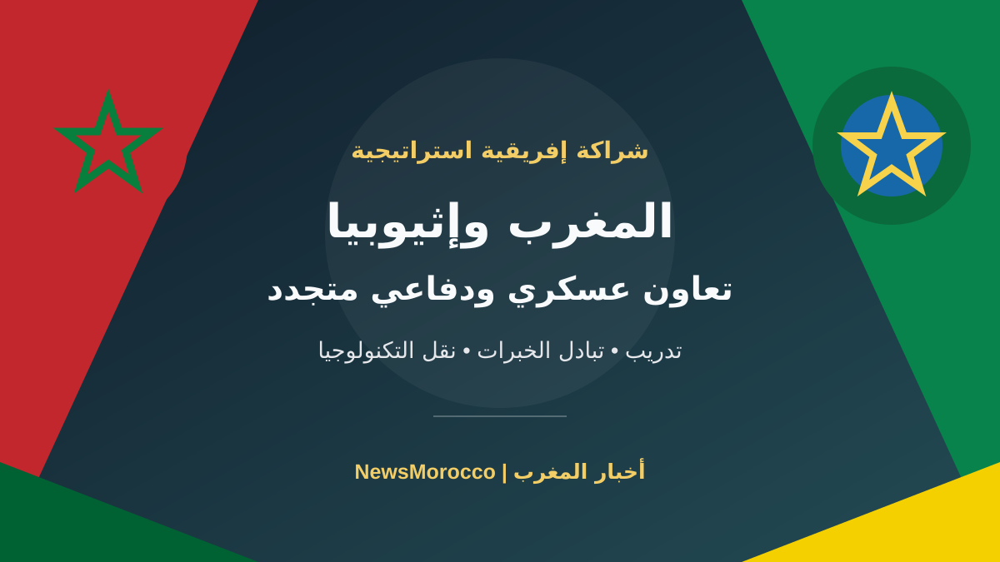

المغرب وإثيوبيا يعززان التعاون العسكري.. لجنة مشتركة تفتح آفاقاً دفاعية جديدة

تتواصل خطوات تعزيز التعاون بين المغرب وإثيوبيا في المجال العسكري والدفاعي، من خلال تفعيل اتفاق التعاون الذي وقعه البلدان في الرباط يوم 17 يونيو 2025، وإحداث لجنة عسكرية مشتركة تتولى تحديد مجالات العمل المشترك ومتابعة تنفيذها.
وعقدت اللجنة أول اجتماع لها في العاصمة الإثيوبية أديس أبابا يومي 13 و14 يناير 2026، حيث ناقش الجانبان خطة عمل للتعاون العسكري والدفاعي، في خطوة تهدف إلى الانتقال من الاتفاق العام إلى تحديد مجالات عملية للتنسيق بين المؤسستين العسكريتين.
تدريب وتبادل خبرات وصناعات دفاعية
ويشمل إطار التعاون، وفق ما أوردته وكالة الأنباء الإثيوبية ووسائل إعلام مغربية، مجالات التكوين والتدريب والتمارين العسكرية، والبحث العلمي، والصحة العسكرية، إضافة إلى تبادل الخبرات والتجارب. كما تناولت المناقشات التعاون في الصناعات الدفاعية ونقل التكنولوجيا.
وتنعقد اجتماعات اللجنة العسكرية المشتركة بالتناوب بين الرباط وأديس أبابا، بما يتيح للطرفين متابعة تنفيذ مجالات التعاون وتحديد الأولويات وفق احتياجاتهما المشتركة.
ماذا تعني الخطوة للمغرب وإفريقيا؟
تعكس هذه الشراكة توجهاً نحو تنويع علاقات التعاون الدفاعي للمغرب داخل القارة الإفريقية، وتعزيز تبادل الخبرات بين المؤسسات العسكرية الإفريقية. كما تفتح المجال أمام تعاون تقني وصناعي أوسع، دون أن يعني ذلك بالضرورة قيام تحالف عسكري موجه ضد دولة أخرى.